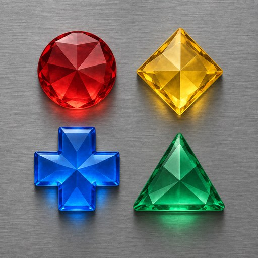
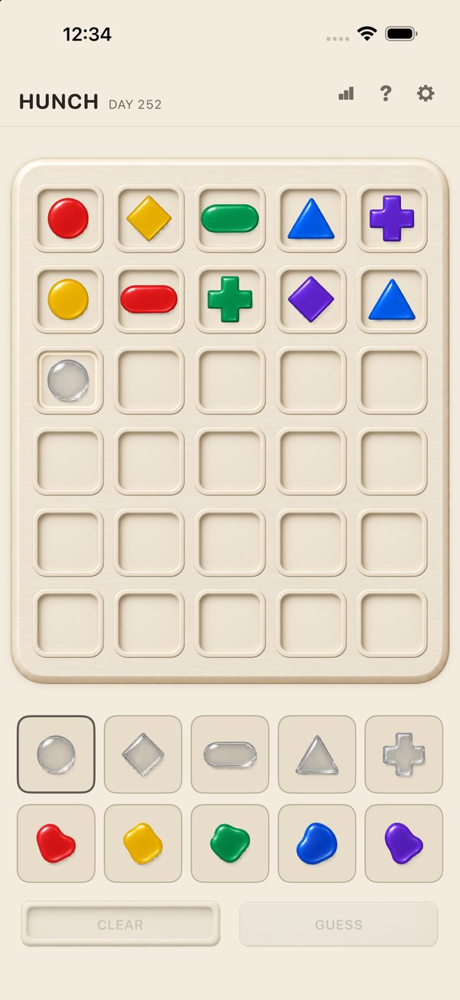
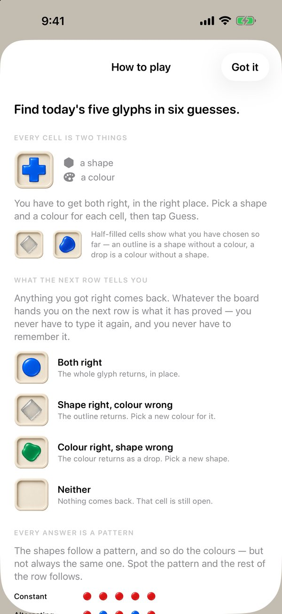
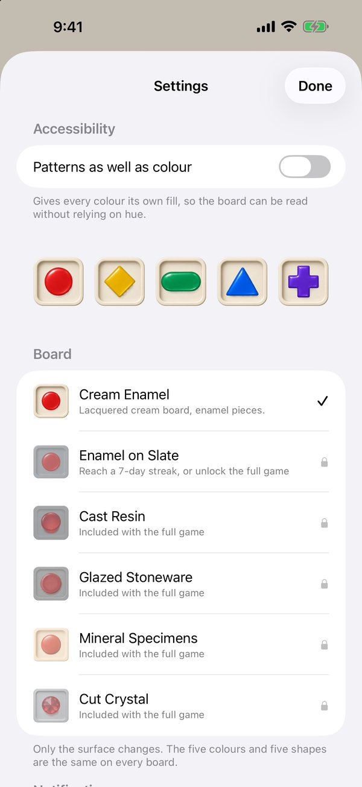

Daily Logic Puzzle · Nattskift Games
One puzzle a day. One try.
A daily deduction puzzle with no words in it. Every day, one hidden pattern of five pieces. Each piece has a shape and a colour, and you have six guesses to find all ten. There is one puzzle a day, the same one for everyone, and one attempt at it.
Get Hunch on the App StoreFree for iPhone



Pick a shape, pick a colour, fill five cells, guess. After every guess the board tells you which shapes were right and which colours were right — never which piece, never how close. Anything the board has proved carries into the next row on its own.
The pattern is never random. Every answer follows a structure — a repeat, an alternation, a progression, a block, a mirror — and finding which one is the moment the puzzle turns.
The daily puzzle is free, every day. A one-time purchase unlocks the archive — every puzzle back to the first — and all six boards. No subscription, no adverts, nothing that runs out.